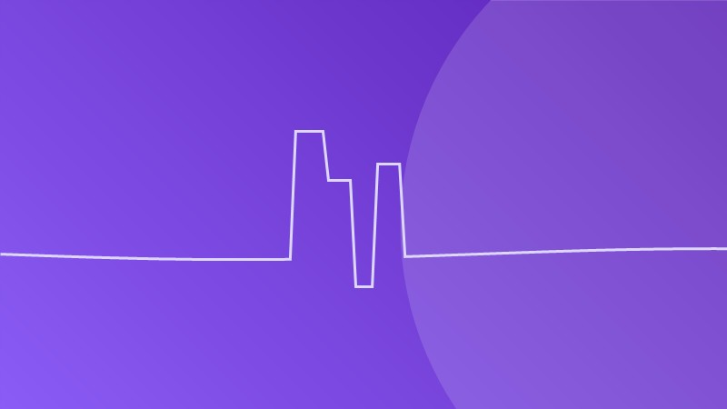

ACV: aprende a reconocer los síntomas y actúa a tiempo

El accidente cerebrovascular (ACV), también llamado ictus o derrame cerebral, ocurre cuando se interrumpe el flujo sanguíneo hacia una parte del cerebro. Las células cerebrales comienzan a morir en cuestión de minutos, por lo que el tiempo es cerebro: actuar rápido puede marcar la diferencia entre la recuperación y la discapacidad permanente.
Tipos de ACV
- ACV isquémico (el más común, ~85%): un coágulo bloquea una arteria cerebral. Es el "infarto cerebral".
- ACV hemorrágico: un vaso sanguíneo se rompe y sangra en el cerebro (hemorragia cerebral).
Como neurocirujano, atiendo ambos tipos en la Unidad de Neurointervencionismo del Hospital Carrión, donde tratamos a pacientes con infartos y hemorragias mediante técnicas avanzadas.
🟢 La regla RÁPIDO / FAST
Memoriza esta regla para reconocer un ACV. En español la recordamos como RÁPIDO:
- R - Rostro: ¿Se ve la cara caída o torcida? Pide que sonría.
- Á - Árma (brazos): ¿Puede levantar ambos brazos? ¿Uno cae?
- P - Palabra: ¿Habla arrastrando las palabras o no puede repetir una frase simple?
- I - Inmediatamente: ante cualquiera de estos signos, llama a emergencias de inmediato.
- D - Detectar la hora de inicio de los síntomas es crucial.
- O - Obtén ayuda médica urgente.
Otros síntomas de alerta
- Entumecimiento o debilidad súbita de la cara, brazo o pierna (especialmente en un lado).
- Confusión o dificultad para hablar o comprender.
- Problemas de visión repentinos en uno o ambos ojos.
- Dificultad para caminar, mareo o pérdida del equilibrio.
- Dolor de cabeza súbito y severo sin causa conocida (en el caso del ACV hemorrágico).
¿Por qué es tan importante la rapidez?
En el ACV isquémico, existe un tratamiento llamado trombectomía mecánica que consiste en extraer el coágulo mediante un microcatéter introducido por la ingle. Esta técnica endovascular puede restablecer el flujo sanguíneo, pero solo es efectiva si se realiza dentro de las primeras horas desde el inicio de los síntomas.
Por eso en el Hospital Carrión trabajamos en coordinación para atender estas emergencias lo antes posible. Cuando un paciente es referido de otro hospital, lo tratamos y luego regresa a su unidad de cuidados intensivos, descongestionando nuestros ambientes.
Factor de tiempo: "ventana terapéutica"
La ventana de tratamiento estándar es de aproximadamente 4.5 horas para la terapia trombolítica intravenosa y puede extenderse para la trombectomía endovascular en casos seleccionados. Por eso: nunca esperes a que los síntomas "pasen solos".
¿Qué hacer mientras se espera ayuda?
- Mantén a la persona acostada y tranquila.
- No le des alimentos ni medicamentos.
- Anota la hora exacta en que comenzaron los síntomas.
- No la dejes sola.